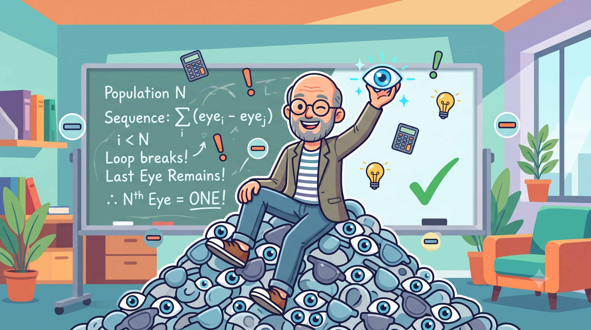

Mathematical Blunder
22 Aug, 2026Gandhi famously said, "An eye for an eye makes the whole world blind." Philosophically? A beautiful sentiment about forgiveness. Mathematically? Completely false.

Let’s run this as a logical sequence. Imagine a closed system—a room full of people, everyone starting with two eyes. Person A takes an eye from Person B. In retaliation, Person B takes an eye from Person A. Both now have one eye left. If this algorithmic loop continues, everyone eventually loses their first eye.Now we enter the second iteration. People with one eye start taking the remaining eyes of others. The number of seeing individuals drops. But let's fast-forward to the very end of this sequence to check the final edge case.
We are left with exactly two people, each possessing a single eye. The second-to-last person takes the eye of the last person. That last person is now completely blind. But who takes the second-to-last person's eye? No one! The rest of the system is already blind and cannot see to retaliate.
The sequence breaks. The whole world does not go blind. By the strict laws of logic, there will always be exactly one person left standing, triumphantly looking around with a single eye!
> Cache_Feedback